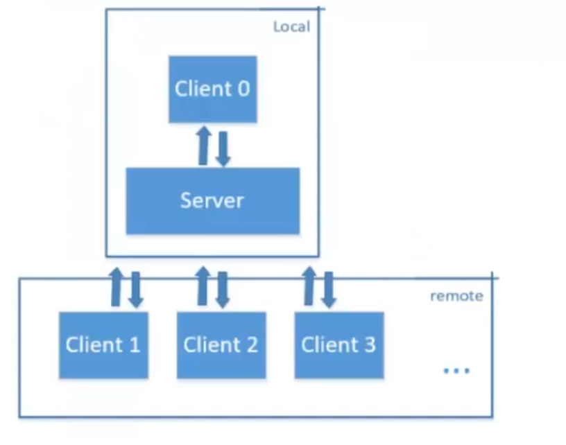

# 需求分析
服务器
- 基于 TCP 协议创建服务器
- 响应客户端的连接请求
- 实时接收所有客户端发来的聊天消息
- 保存（显示）聊天消息，并转发消息给其他客户端
服务器要及时检查和客户端连接状态，如发现有客户端已经断开连接，需要删除通信套接字。
客户端
- 创建 TCP 套接字
- 配置服务器的 IP、端口和聊天室昵称
- 向服务器发送连接请求
- 获取用户输入的聊天消息，发送到服务器
- 实时接收服务器转发的聊天消息，并显示
# 概要设计
服务器
- 创建 TCP 服务器
- 使用 QTcpServer 创建服务器
- 设置监听服务器 IP 地址和端口
- 响应客户端连接请求
- 获取和客户端通信的 TCP 套接字
- 保存和客户端通信套接字到容器
- 实时接收客户端发来的聊天信息
- 接收客户端发来消息
- 遍历检查客户端是否有消息
- 如果有消息则读取并保存（显示）
- 转发聊天消息给所有在线客户端
客户端
- 创建 TCP 通信套接字
- 使用 QTcpSocket 创建套接字
- 和服务器建立连接
- 通过界面配置服务器的 IP 地址、端口
- 向服务器发送连接请求
- 连接成功后发送进入聊天室提示消息
- 发送和接收聊天消息
- 用户通过界面输入聊天消息并发送到服务器
- 实时接收服务器转发的消息并显示到界面
# 详细设计
| 计算机网络分层模型 | ||
|---|---|---|
| OSI七层网络模型 | TCP/IP四层概念模型 | 对应网络协议 |
| 应用层（Application） | 应用层 | HTTP、TFTP、FTP、NFS、WAIS、SMTP |
| 表示层（Presentation） | Telnet、Rlogin、SNMP、Gopher | |
| 会话层（Session） | SMTP、DNS | |
| 传输层（Transport） | 传输层 | TCP、UDP |
| 网络层（Network） | 网络层 | IP、ICMP、ARP、RARP、AKP、UUCP |
| 数据链路层(Data Link) | 网络接口层 | FDDI、Ethernet、Arpanet、PDN、SLIP、PPP |
| 物理层(Physical) | IEEE802.1A、IEEE802.2-IEEE802.11 | |
TCP 是一个面向连接的，安全的，流式传输协议，这个协议是一个传输层协议。
- 面向连接：是一个双向连接，通过三次握手完成，断开连接需要通过四次挥手完成。
- 安全：tcp 通信过程中，会对发送的每一数据包都会进行校验，如果发现数据丢失，会自动重传
- 流式传输：发送端和接收端处理数据的速度，数据的量都可以不一致
聊天室服务器（QTcpServer）
QTcpServer类提供了一个基于 TCP 的服务器，通过该类可以快速建立 TCP 服务器，并接受客户端的连接请求QTcpServer::listen()函数可以指定服务器的端口号，如果用户没指定也可以由 QTcpServer 自动选择一个可用的端口，同时该函数可以监听当前主机指定的 IP 地址（QHostAddress），或者设置为QHostAddress::Any监听所有地址。- 设置监听后，每当检测到客户端发来连接请求，将会发送信号
newConnection()，可以自定义槽函数，在其中调用nextPendingConnection()获取和客户端通信的套接字。
创建 TCP 服务器流程（基于 QTcpServer）
// 创建 QTcpServer 对象 | |
QTcpServer tcpServer; | |
// 开启 TCP 服务器，监听所有地址 | |
tcpServer,listen(QHostAddress::Any, port); | |
// 连接客户端连接时的槽函数 | |
connect(&tcpServer, SIGNAL(newConnection()), this, SLOT(onNewConnection())); |
服务器：响应客户端连接请求
void Server::onNewConnection(){ | |
// 获取与客户端通信的套接字 | |
QTcpSocket* tcpClientSocket = tcpServer.nextPendingConnection(); | |
// 保存客户端套接字到容器 | |
clientList.append(tcpClientSocket); | |
// 客户端有消息时，将触发 readyRead () 信号 | |
connect(tcpClientSocket, SIGNAL(readyRead()), this, SLOT(onReadyRead())); | |
} |
服务器：接收客户端发来的消息
void ServerDialog::onReadyRead(){ | |
for(int i=0; i < clientList.size(); i++) // 遍历检查哪个客户端有消息到来 | |
if(clientList.at(i) -> bytesAvailable()){ | |
QByteArray buf = clientList.at(i) -> readAll(); // 读取消息并保存 | |
ui -> listWidget -> addItem(buf); // 显示消息到界面 | |
sendMessage(buf); // 转发消息给其他在线客户端 | |
} | |
} |
客户端（基于 QTcpSocket）
// 创建和服务器通信的 tcp 套接字 | |
QTcpSocket tcpSocket; | |
// 向服务器发送连接请求 | |
tcpSocket.connectToHost(serverIP, serverPort); | |
// 和服务器连接时，发送信号 connected () | |
connect(&tcpSocket, SIGNAL(connected()), this, SLOT(onConnected())); | |
// 收到服务器转发的消息时，发送信号 readyRead () | |
connect(&tcpSocket, SIGNAL(readyRead()), this, SLOT(onReadyRead())); |
客户端：发送聊天消息
点击发送按钮向服务器发送聊天消息
void ClientDialog::on_sendButton_clicked(){ | |
QString msg = ui->messageEdit->text(); // 获取用户输入的聊天内容 | |
msg = username + ":" + msg; // 消息前面加上用户名 | |
tcpSocket.write(msg.toUtf8()); // 向服务器发送聊天消息 | |
ui->messageEdit->clear(); // 清空已输入的消息 | |
} |
客户端：就收聊天消息
检测信号 readyRead，有消息到来则读取
void ClientDialog::onReadyRead() { | |
if(tcpSocket.bytesAvailable()){ // 获取等待读取信息字节数 | |
QByteArray buf = tcpSocket.readAll(); // 读取消息并保存 | |
ui->listWidget->addItem(buf); // 显示消息 | |
} | |
} |